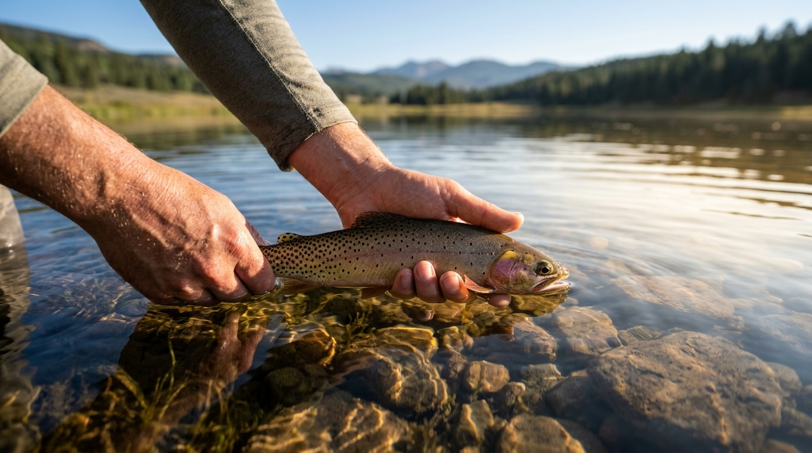

Sponsorship & Partnership Opportunities
Invest in Permanent Wildlife Conservation & Veteran Outdoor Access in Northern New Mexico.
The D.G. Chama Sanctuary Project offers corporate sponsors, conservation foundations, and philanthropic partners a rare opportunity to become Founding Partners of a 1,917-acre wildlife sanctuary and veteran retreat in Chama, New Mexico.

Founding Sponsorship Tiers
1. Founding Legacy Partner — $50,000+
- Premier logo placement on homepage, sponsor wall, and press releases
- Dedicated recognition signage at a key sanctuary zone
- Private annual multi-day conservation tour and catch-and-release angling retreat for up to 4 corporate guests
- Custom annual ESG and conservation impact report
2. Watershed & Wildlife Steward — $25,000
- Featured website and print logo placement
- Direct recognition for Wildlife Food Plot Restoration or Catch-and-Release Trout Stream Stewardship
- Annual 2-day sanctuary site visit and catch-and-release fly-fishing experience for 2 guests
3. Veteran Access Champion — $10,000
- Direct underwriting of disabled veteran hosted wildlife management hunts and adaptive fly-fishing retreats
- Featured logo and link on Sponsorship Opportunities and veteran program materials
- Annual veteran impact summary
4. Conservation Supporter — $2,500 – $5,000
- Name and logo listed under Founding Conservation Supporters on our website
- Quarterly progress updates on habitat projects, raptor enhancements, and veteran/youth retreats
In-Kind & Equipment Partnerships
We welcome strategic in-kind contributions from outdoor, optics, angling, ranching, and construction leaders, including fly-fishing rods, reels, rubber-soled wading boots, binoculars/spotting scopes, EPA-registered bear spray, native seed mixes, and ranch supplies.
Request a Founding Sponsor Prospectus
Contact Founder & Executive Director David J. O’Bryon at info@dgchamasanctuaryproject.com.
Send Sponsorship Inquiry